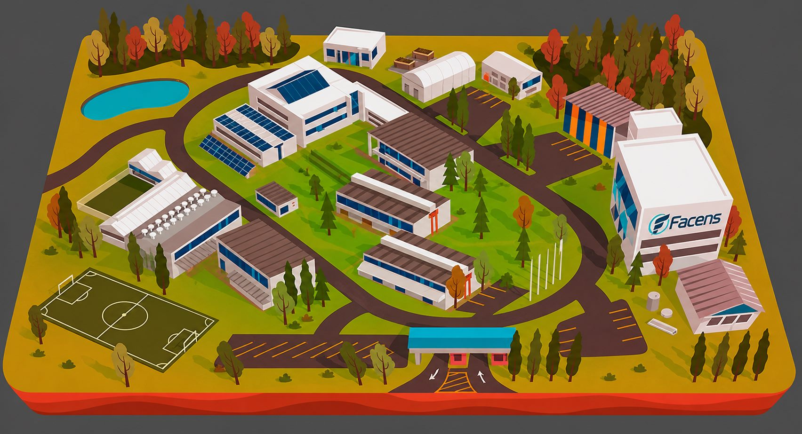

Projeto UPx
2026/1
Gestao inteligente de residuos
SmartWaste avisa quando a lixeira precisa de coleta.
Um sistema web + IoT para medir o nivel de residuos, indicar status por cor e orientar a equipe de limpeza para os pontos mais urgentes.
Proposta de valor: reduzir transbordamentos, cortar verificacoes manuais e transformar coleta em uma rotina guiada por dados.
80% limite de alerta
7 pontos simulados
3 status por cor
Problema
Sem monitoramento, a coleta depende de rondas e percepcao visual.
Em locais movimentados, a equipe precisa verificar pontos de descarte manualmente. Isso consome tempo, atrasa respostas e aumenta o risco de lixeiras cheias em areas de maior fluxo.
Dor principal
Falta um indicador rapido de quais lixeiras devem ser coletadas primeiro.
Alerta imediato
Status vermelho quando uma lixeira passa de 80%.
Mapa do campus
Pontos monitorados aparecem sobre o mapa da Facens.
Historico simples
Leituras recentes ajudam a entender horarios de maior uso.
Beneficios
O valor aparece no tempo de resposta, na limpeza e nos dados.
Prioriza coleta
A lista ordena os pontos mais cheios e evita rondas desnecessarias.
Funciona no celular
Cards, filtros e detalhes foram pensados para consulta rapida.
Facil de demonstrar
A simulacao em JavaScript permite apresentar o conceito sem hardware pronto.
Escalavel
A mesma interface pode receber leituras reais de sensores IoT no futuro.
Como funciona
Fluxo do sistema: medir, classificar, priorizar e registrar.
Leitura do nivel
Um sensor mede a distancia ate o lixo e estima a ocupacao da lixeira.
Classificacao
O sistema converte o nivel em status verde, amarelo ou vermelho.
Acao no dashboard
A equipe consulta mapa, cards, filtros e historico para decidir a rota.
Registro para analise
Cada atualizacao entra no historico para validar horarios e pontos criticos.
Diferenciais
O SmartWaste combina prototipo academico com logica de produto real.
Foco em sustentabilidade
Ajuda a evitar transbordamento e melhora a organizacao do descarte.
Decisao por dados
Mostra prioridade, media de ocupacao e historico de leituras.
Uso em campo
Interface responsiva para consulta rapida no celular.
Evolucao simples
Simulacao atual preparada para receber sensores reais em etapa futura.
Arquitetura tecnica
Camadas simples para explicar o prototipo sem complicar a demonstracao.
Resultados esperados
Mais previsibilidade para ambientes com alto fluxo.
Equipe
Desenvolvido como projeto academico UPx.
A equipe SmartWaste organiza o trabalho em pesquisa, prototipo fisico, dashboard e validacao com usuarios do campus.
Pesquisa e validacao
Mapeamento do problema, entrevistas e feedbacks do publico.
Prototipo IoT
Definicao de sensores, microcontrolador e leitura de nivel.
Dashboard web
Interface responsiva para visualizar status, mapa e historico.
Teste a experiencia
Abra o dashboard e simule uma leitura das lixeiras.
Sistema SmartWaste
Dashboard de lixeiras inteligentes
Acompanhe lixeiras por localizacao, nivel de ocupacao, status de prioridade e historico de atualizacao.

Historico
Ultimas leituras
Area do Coletor
Gestao de coletas em campo
Acompanhe as coletas do dia, inicie atendimentos, conclua rotas e registre historico de forma simples para a equipe operacional.
Resumo do dia
Status operacional das coletas
Operacao
Lista de coletas
Sobre o projeto
SmartWaste para o campus Facens
O SmartWaste e uma proposta academica de lixeira inteligente para transformar a coleta em um processo mais previsivel, visual e sustentavel. O sistema demonstra como sensores e dashboard podem apoiar operacoes de limpeza em ambientes com grande circulacao.
Problema
Falta uma forma simples de saber, em tempo util, qual lixeira precisa de coleta.
Solucao
Dashboard responsivo com mapa, cards, niveis, filtros e alertas acima de 80%.
Impacto
Rotas mais inteligentes, menos verificacao manual e melhor experiencia no campus.
ODS
Conecta-se a cidades sustentaveis, consumo responsavel e reducao de desperdicios.
Tecnica
Fluxo preparado para sensor, microcontrolador, simulacao web e historico.
Validacao
O projeto pode ser validado com equipe de limpeza, alunos e testes em pontos do campus.